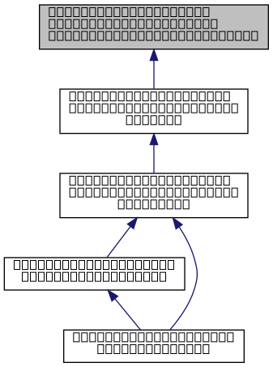

#include <
cuda_utils.h
>
#include <
cuml/manifold/umapparams.h
>
#include <
common/fast_int_div.cuh
>
Include dependency graph for optimize_batch_kernel.cuh:

This graph shows which files directly or indirectly include this file:
